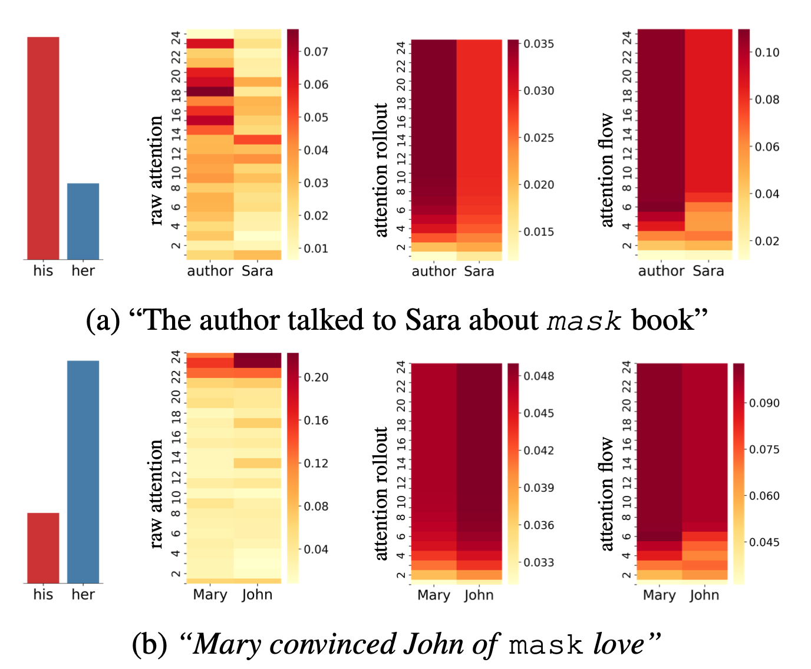

Attention has become the key building block of neural sequence processing models, and visualising attention weights is the easiest and most popular approach to interpret a model’s decisions and to gain insights about its internals. Although it is wrong to equate attention with explanation (Pruthi et al., 2019; Jain & Wallace, 2019), it can still offer plausible and meaningful interpretations (Wiegreffe & Pinter, 2019; Vashishth et al., 2019; Vig, 2019). In this post, I focus on problems arising when we move to the higher layers of a model, due to lack of token identifiability of the embeddings in higher layers (Brunner et al., 2020). I will explain the ideas proposed in our paper for visualising and interpreting attention weights taking this problem into account!
Here, I will explain two simple but effective methods, called Attention Rollout and Attention Flow, to compute attention scores to input tokens (i.e., token attention) at each layer, by taking raw attentions (i.e., embedding attention) of that layer as well as those from the precedent layers.
Let’s first discuss the token identifiability problem in Transformers in more details.
Attention to Embeddings vs Attention to Input Tokens
In the Transformer model, in each layer, self-attention combines information from attended embeddings of the previous layer to compute new embeddings for each token. Thus, across layers of the Transformer, information originating from different tokens gets increasingly mixed (Check out the (Brunner et al., 2020) for a more through discussion on how identity of tokens get less and less represented in the embedding of that position as we go into deeper layers.).
Hence, when looking at the $i$th self-attention layer, we can not interpret the attention weights as the attention to the input tokens, i.e., embeddings in the input layer. This makes attention weights unreliable as explanation probes to answer questions like “Which part of the input is the most important when generating the output?” (except for the very first layer where the self-attention is directly applied on the input tokens.)

Raw attention weights
Let’s take a look at the example in the figure that shows how attention weights in a Transformer model change across layers. In this figure, we seen the attention weights of a 6-layer Transformer encoder trained on the subject-verb agreement classification task for an example sentence. In the subject-verb agreement task, given a sentence up to its verb, the goal is to classify the number of the verb. To be able to do this, a model needs to correctly recognise the subject of that verb. For the example in the figure, The key to the cabinets <verb>, intuitively we expect the model to attend to the token key, which is the subject of the missing verb, to correctly classify the verb number. Or the token cabinets, the attractor in case it is making a mistake.
However, if we only look at the attention weights in the last layer, it seems all input tokens have more or less equal contributions to the output of the model, since the attention weights from the CLS token in this layer are almost uniformly distributed over all embeddings. But if we also take into account the attention weights in the previous layers, we realise that some of the input tokens are getting higher attention in earlier layers. In particular, in layer 1, we see that the embedding for the verb is mostly attending to the token key and in the third layer, the CLS token is mostly attending to the embedding of the verb.
So, if we want to use attention weights to understand how a self-attention network works, we need to take the flow of information in the network into account. One way to do this is to use attention weights to approximate the information flow, while taking different aspects of the architecture of the model into account, e.g., how multiple heads interact or the residual connections.
Information Flow Graph of a Transformer Encoder
Let’s take a look at the schematic view of self-attention layer in the Transformer Model introduced in (Vaswani et al., 2017)(figure below):

Transformer encoder block
Given this attention module with residual connections, we compute values in layer $l+1$ as $V_{l+1} = V_{l} + W_{att}V_l$, where $ W_{att}$ is the attention matrix. Thus, we have $V_{l+1} = (W_{att} + I) V_{l}$. So, to account for residual connections, we add an identity matrix to the attention matrix and re-normalize the weights. This results in $A = 0.5W_{att} + 0.5I$, where $A$ is the raw attention updated by residual connections.
We can create the information flow graph of a Transformer model, using this equation as an approximation of how information propagates in the self-attention layers. Using this graph, we can take the attention weights in all layers into account and translate the attention weights in each layer to attention to input tokens.
The information flow in the network can be modelled with a DAG (Directed Acyclic Graph), in which input tokens and hidden embeddings are the nodes, and edges are the attentions from the nodes in each layer to those in the previous layer, and the weights of the edges are the attention weights. Note that, we augment this graph with residual connections to more accurately model the connections between input tokens and hidden embedding.
From Attention to Embeddings to Attention to Tokens
Given this graph, based on how we interpret the weights associated with the edges, which are the raw attention weights, we can use different techniques to compute the attention from each node in the graph to the input tokens.
Attention Rollout
Assume the attention weights determine the proportion of the incoming information that can propagate through each link, i.e., the identities of input tokens are linearly combined through the layers based on the attention weights. Then, to compute the attention to input tokens in layer given all the attention weight in the previous layers, we recursively multiply the attention weights matrices, starting from the input layer up to layer . In the figure below, we show how Attention Rollout works in a simple attention DAG. In this example, the goal is to compute the attention from the embedding of the last position in the last layer to the first input token. We see that the attention weights in the second layer are multiplied by the attention weights from the first layer to compute the final attention score.

Attention Rollout
Attention Flow
If we view the attention weights as the capacity of each link, the problem of computing the attention in layer to the input tokens reduces to the maximum flow problem, where we want to find the maximum flow value from each input token to each position in layer .
In the figure below, we see the same example as the one we saw for the Attention Rollout, except here the attention weights are viewed as the capacity of the edges. Thus, the total attention score of a path is the smallest capacity of the edges in that path. This is a very simple example and computing maximum flow can be more complicated when paths overlap.

Attention Flow
How does this all works in practice?

Let’s see an example of how these techniques work in practice! Applying these techniques to a pretrained 24-layer BERT model, we get some insights on how the models resolve pronouns. What we do here is to feed the model with a sentence, masking a pronoun. Next, we look at the prediction of the model for the masked pronoun and compare the probabilities predicted for her and his.
As we can see, in the first example (figure a), the prediction of the model is his. Hence, we expect the model to attend to the word author rather than Sara. In this case, both Attention Rollout and Attention Flow are consistent with this intuition. Whereas, the final layer of Raw Attention does not seem to be consistent with the prediction of the models, and it varies a lot across different layers.
In the second example, the prediction of the model is her, hence, we expect the model to pay more attention to the word Mary. However, both Raw Attention weights and Attention Rollout show that the model is attending to John. In this case, only Attention Flow weights are consistent with our intuition and the prediction of the model.
In some sense Attention Rollout is more restrictive compared to Attention Flow, and it provides us with more exaggerated differences between attention scores to different input tokens (because it multiplies the weights). This can be a source of error for Attention Rollout considering the approximations we have in these techniques.
Note that, both Attention Rollout and Attention Flow are suggested as post-hoc methods for visualisation and interpretation purposes and they do not provide new attention weights to be used during training or inference.
To see more examples, you can try out this notebook. And for more details, such as how we can handle multiple heads take a look at out paper, “Quantifying Attention Flow In Transformers”.